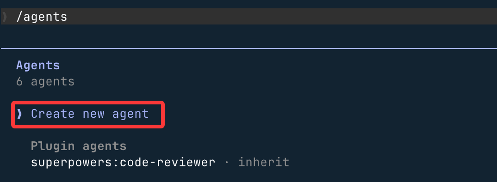
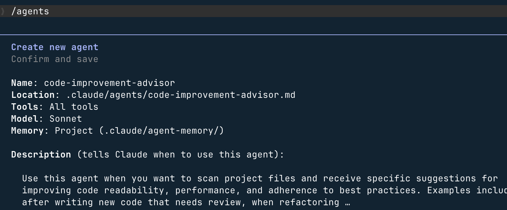

Claude Code サブエージェント（Subagent）
Claude Code では、作成できます専用の AI サブエージェント（Subagent）、特定タイプのタスクを処理するために使用され、より良いコンテキスト分離、より強力な制約制御、より高い実行効率を得られます。
サブエージェントは独立したコンテキストウィンドウで実行されます。各サブエージェントは、独立したシステムプロンプト、指定されたモデル、明確なツールアクセス権限、独立した権限モード、セッションをまたぐ永続メモリを持つことができます。Claude があなたのリクエストが特定のサブエージェントの説明に一致すると判断すると、自動的にタスクを委任し、サブエージェントが独立して完了した後、結果を返します。
サブエージェントは自身のシステムプロンプトと基本環境情報（作業ディレクトリなど）のみを受け取り、完全な Claude Code システムプロンプトは継承されません。、これにより動作の純粋性と制御可能性が保証されます。
なぜサブエージェントを使うのか
サブエージェントの中心的な価値は分離 + 特化、主に以下の点に現れています：
メイン対話のコンテキストを保持：探索やログ分析などの「重いタスク」をサブエージェントに任せ、メイン対話は結論の要約のみを受け取り、大量の中間出力に埋もれません。調査によると、3つのサブエージェントを並行実行して5万行のプロジェクトを分析するには約45秒かかりますが、直列実行では3分かかります。
制約を強制実行：ツールのホワイトリストまたはブラックリストを通じてサブエージェントの能力を制限します。例えば、読み取り専用分析、危険なコマンドの実行禁止など。
動作の特化：特定領域（コードレビュー、デバッグ、データ分析）向けに専用AIを設計し、システムプロンプトでエージェントの能力の境界を明確に示し、不要な呼び出しを避けます。
コストの制御：簡単なタスクは Haiku に、複雑な分析は Sonnet に任せ、環境変数を介してCLAUDE_CODE_SUBAGENT_MODELすべてのサブエージェントが使用するモデルを一括設定します。
プロジェクト横断での再利用：ユーザーレベルのサブエージェントは一度設定すれば、すべてのプロジェクトで使用できます。
サブエージェント vs マルチエージェント
この2つの概念は混同されがちですが、違いはタスクの粒度と実行範囲にあります：
| 比較項目 | サブエージェント（Subagent） | マルチエージェント（Multi-agent） |
|---|---|---|
| 実行範囲 | 単一の Claude Code セッション内で起動し、サブタスクを処理した後に結果を返す | 複数の Claude Code セッションが並列または直列に実行され、通常はオーケストレーターによって管理される |
| コンテキスト | 独立したコンテキストウィンドウで、メイン対話から分離されている | 各セッションのコンテキストは完全に独立 |
| ネスト | サブエージェントはサブエージェントを作成できません（ネストが必要な場合は Skills を使用） | オーケストレーターが多層タスクを調整できる |
| 適用シーン | サブタスクへの集中、大量出力の分離、専門的分析 | フル機能の開発パイプライン（設計 → 実装 → テスト → リリース） |
組み込みサブエージェント
Claude Code には複数のサブエージェントが組み込まれており、通常は自動的に使用され、手動設定は不要です。
1、Explore（探索エージェント）
コードベースの読み取り専用検索と分析に使用します。モデルはデフォルトで Haiku（高速・低遅延）を使用し、読み取り専用ツールのみ開放されます（Edit / Write は不可）。Claude がコードを表示する必要があるが変更しない場合、Explore エージェントが自動的に使用されます。さまざまな探索深度をサポートしています：quick、medium、very thorough。
2、Plan（計画エージェント）
計画モードでコードベース情報を収集し、Claude がプロジェクト構造を理解するのを助け、その後の計画立案のためにコンテキストを蓄積します。読み取り専用ツールのみ開放され、ネストしたエージェントを生成せずに、計画に必要な情報を安全に収集します。
3、General-purpose（汎用エージェント）
複雑で多段階のタスクに使用し、すべてのツールを開放し、メイン対話のモデルを継承します。「見る + 変更する + 推論する」の総合的なシーンや、多段階のコード変更が必要なタスクに適しています。
4、その他の内部エージェント
| エージェント名 | 説明 |
|---|---|
| Bash | 独立したコンテキストで Shell コマンドを実行 |
| statusline-setup | ターミナルのステータスバー表示を設定 |
| Claude Code Guide | Claude Code の使用に関する質問に回答 |
最初のサブエージェントを作成する
1、サブエージェント管理画面を開く
Claude Code で以下のコマンドを実行すると、完全なサブエージェント管理画面が開きます：
/agents
この画面はすべてのサブエージェント管理機能を提供します：利用可能なすべてのエージェント（組み込み / ユーザーレベル / プロジェクトレベル / プラグイン）の表示、新規エージェントの作成、既存エージェントの編集、同名の競合時にどのバージョンが実際に有効かを確認します。
2、ユーザーレベルのサブエージェント作成を選択
画面で選択Create new agent:

その後選択Project (.claude/agents/)、エージェントファイルは現在のディレクトリの .claude/agents/ ディレクトリに保存されます。もし~/.claude/agents/ディレクトリを選択した場合は、すべてのプロジェクトに有効です：

Claude が推奨するものを使う：

3、エージェントの役割を記述
自然言語で Claude にこのエージェントが何をするかを直接伝えることができます。Claude が自動的にシステムプロンプトと初期設定を生成します。例：
一个代码改进代理，扫描项目文件， 针对可读性、性能和最佳实践提出建议， 并给出改进示例。

生成が完了したら、eキーを押すと、すべての設定内容を手動で編集できます。
4、ツール権限とモデルを設定
- コードレビューのみ → 読み取り専用ツールのみチェック（Read / Grep / Glob）
- コードの変更が必要 → Edit / Write ツールを残す
- モデルの推奨選択Sonnet、分析能力と実行速度のバランスが良いです。
そのまま Contiune を選んで Enter を押します：

後はデフォルトを選んで Enter を押せばOKです。
5、記憶範囲を選択（任意）
- 選択User：に
~/.claude/agent-memory/永続メモリを構築し、すべてのプロジェクトにわたって経験を蓄積します - 選択None：学習成果を保持せず、毎回タスクをゼロから開始します

6、作成したばかりのエージェントを使用
使用 code-improver 子代理为此项目提出改进建议

エージェントは独立したコンテキストで実行され、完了後に結果の要約をメイン対話に返します。
サブエージェントの適用範囲
サブエージェントは基本的に YAML frontmatter を持つ Markdown ファイルであり、保存場所によって適用範囲と優先度が決まります：
| 保存場所 | 適用範囲 | 優先度 |
|---|---|---|
CLI --agentsフラグ |
現在のセッションのみ | 最高 |
.claude/agents/ |
現在のプロジェクト | 高 |
~/.claude/agents/ |
すべてのプロジェクト（グローバル） | 中 |
| プラグイン agents | プラグインのスコープ | 最低 |
同名のサブエージェントが異なる場所に存在する場合、優先度の高いものが低いものを上書きします。次のコマンドで/agents現在のどのバージョンが実際に有効かを確認できます。
保存場所の選択に関するアドバイス：プロジェクトエージェント（.claude/agents/）コードと一緒にコミットでき、チームで共有できます。ユーザーエージェント（~/.claude/agents/）個人の習慣や汎用ツールを保存し、プロジェクトをまたいで有効です。CLIエージェント（--agents）一時的なテストや自動化スクリプトに使用し、ディスクには保存されません。
設定ファイルの構造
各サブエージェントの設定ファイルは、YAML frontmatter（メタデータと設定）とMarkdown本文（システムプロンプト）の2つの部分で構成されています。
例
name: code-reviewer # 必須：一意の識別子。小文字+ハイフン
description: Reviews code for quality, best practices, and security issues.
Invoke when the user asks to review, audit, or check code quality.
# 必須：Claudeがこのエージェントを自動的に呼び出すタイミングを決定します。「いつ呼び出すか + 何ができるか」の形式で記述することを推奨
tools: Read, Grep, Glob # ツールホワイトリスト（これらのツールのみ使用可能）
model: sonnet # モデル指定：haiku / sonnet / opus / inherit
permissionMode: default # 権限モード（下記の権限モードの章を参照）
memory: project # 永続メモリのスコープ（下記のメモリの章を参照）
---
You are a senior code reviewer.
Analyze code and provide actionable feedback organized by severity: Critical / Major / Minor.
Update your agent memory with recurring patterns, conventions, and known issues you discover.
全フィールドの説明
| フィールド | 必須かどうか | 説明 |
|---|---|---|
name |
必須 | 一意の識別子であり、明示的に呼び出す際の名前でもあります。形式：小文字+ハイフン、例：code-reviewer |
description |
必須 | 最も重要なフィールド、Claudeがこのエージェントを自動的に呼び出すかどうか、そしていつ呼び出すかは完全にこれに依存します。使用シナリオを必ず明確に記述してください |
tools |
任意 | ツールホワイトリスト。設定すると、リストされたツールのみ使用可能になり、MCPツールも除外されます |
disallowedTools |
任意 | ツールブラックリスト。メインの会話からすべてのツールを継承しますが、リストされたツールを除外します（MCPツールは保持） |
model |
任意 | モデルを指定します。指定できるのはhaiku、sonnet、opus、完全なモデルID、またはinherit（デフォルト、メインの会話を継承） |
permissionMode |
任意 | 権限動作の制御。下記の権限モードの章を参照 |
memory |
任意 | 永続メモリのスコープ：user / project / local、下記のメモリの章を参照 |
background |
任意 | に設定するとtrue、そのエージェントは常にバックグラウンドで実行されます（メインの会話をブロックしません） |
isolation |
任意 | に設定するとworktree、一時的なgit worktree内で実行され、メインリポジトリから完全に分離されます |
skills |
任意 | このエージェントの起動時に自動的にロードされるSkillsのリスト |
hooks |
任意 | ライフサイクルフック：SubagentStart / SubagentStop / PreToolUse / PostToolUse |
tools と disallowedTools の違い
| 設定方法 | 動作 | 典型的なシナリオ |
|---|---|---|
| 両方とも設定しない | メインの会話のすべてのツールを継承し、MCPツールを含む | 汎用エージェント、制限の必要なし |
のみ設定tools |
ホワイトリスト内のツールのみ使用可能。MCPツールは除外されます | 読み取り専用分析エージェント、厳格な制約が必要なシナリオ |
のみ設定disallowedTools |
すべてのツールを継承し、ブラックリストのツールを除外。MCPツールは保持 | MCP機能を保持するが書き込み操作を禁止 |
| 両方を同時に設定 | 最初に適用disallowedTools、次に残りのツールからtoolsでフィルタリングします |
ツールアクセスの細かい制御 |
例
---
name: safe-researcher
description: Research agent with read-only access. Use when analyzing code without making changes.
tools: Read, Grep, Glob, Bash # これらの4つのツールのみ開放。WriteとEditはホワイトリストにないため使用できません
---
例
---
name: no-writes
description: Analysis agent that inherits all tools except file writes.
disallowedTools: Write, Edit # MCPツールを保持し、WriteとEditのみ除外
---
権限モード
によってpermissionModeフィールドで、サブエージェントが操作を実行する際の権限動作を制御します：
| モード | 動作 | 適用シナリオ |
|---|---|---|
default |
通常の権限プロンプト。操作のたびにユーザーに確認 | 一般的なシナリオ、デフォルト値として推奨 |
acceptEdits |
ファイル編集を自動的に受け入れ、毎回の確認は不要 | ファイルを頻繁に変更するエージェント向け。対話の中断を減らす |
dontAsk |
未承認の操作を自動的に拒否し、実行フローを中断しない | 厳格な読み取り専用シナリオ。操作失敗時は静かにスキップ |
bypassPermissions |
すべての権限チェックをスキップし、直接実行 | 完全に信頼でき、制御された自動化環境のみ |
plan |
読み取り専用の計画モード。書き込み操作は一切実行しない | ソリューション策定、アーキテクチャ分析 |
bypassPermissions完全に信頼できるサブエージェントにのみ適しています。また、サブエージェントは親セッションの権限モードを継承します——メインセッションでbypassを有効にすると、すべてのサブエージェントもbypassになります。使用時は特に注意してください。
永続メモリ（Memory）
によってmemoryフィールドを使用して、サブエージェントはセッション間で知識を蓄積できます。例：コードベースの規則、デバッグ経験、アーキテクチャ上の決定など。毎回再調査する必要はありません。
| スコープ値 | 保存場所 | 適用シナリオ |
|---|---|---|
user |
~/.claude/agent-memory/<name>/ |
エージェントの知識がすべてのプロジェクトに適用されます。例：汎用コードレビュー規約 |
project |
.claude/agent-memory/<name>/ |
知識はプロジェクトに紐づき、gitを通じてチームで共有可能（デフォルト値として推奨） |
local |
.claude/agent-memory-local/<name>/ |
知識はプロジェクトに紐づくがgitにはコミットせず、個人のローカル経験のみ保存 |
例
name: code-reviewer
description: Reviews code for quality and best practices. Invoke when reviewing code changes.
memory: user # ユーザーレベルのメモリ：プロジェクト横断でレビュー経験を蓄積
---
You are a code reviewer.
As you review code, update your agent memory with patterns, conventions,
and recurring issues you discover in this codebase.
会話内でメモリの使用方法を制御：
- タスク開始前：
请先查阅你的记忆，再开始审查（エージェントに既存の経験を活用させる） - タスク終了後：
任务完成后，把你发现的规律保存到记忆中（継続的に蓄積） - システムプロンプトに「メモリを積極的に維持する」という指示を直接記述することもできます。エージェントが自動的に実行するため、毎回手動でリマインドする必要はありません
worktree 分離モード
設定isolation: worktreeすると、サブエージェントは一時的なgit worktree内で実行され、メインリポジトリから完全に分離されます。以下のシナリオに適しています：
- 大量のファイル変更が必要だが結果が不確実な探索的タスク
- 複数の案を並行実行して比較し、互いに干渉しない
- 自動テスト、CI検証など、クリーンな環境を必要とする操作
例
name: experimental-refactor
description: Tries refactoring approaches in an isolated worktree.
Use when exploring risky refactoring that shouldn't affect main branch.
isolation: worktree # 一時的なworktree内で実行され、変更はメインリポジトリに影響しない
tools: Read, Write, Edit, Bash
---
You are a refactoring agent working in an isolated environment.
Feel free to make changes—they won't affect the main branch.
Summarize what you changed and whether the approach was successful.
バックグラウンド実行（Background）
サブエージェントはフォアグラウンドとバックグラウンドの2つの実行方法をサポートしており、動作が異なります：
| 実行方法 | 動作 | 制限 |
|---|---|---|
| フォアグラウンド（Foreground） | 完了までメインの会話をブロックし、権限プロンプトや明確化の質問はリアルタイムでユーザーに渡されます | 特別な制限なし |
| バックグラウンド（Background） | 並行実行し、メインの会話を中断しません。起動前に必要な権限を事前に確認します | MCPを使用できず、対話的な明確化もできません。権限が不足している場合、タスクは一時停止して待つのではなく失敗します |
Claudeはタスクの特性に応じてフォアグラウンドかバックグラウンドかを自動判断します。手動で制御することもできます：
Ctrl + B：現在実行中のサブエージェントをバックグラウンドに切り替えるCtrl + F（2回押して確認）：すべてのバックグラウンドエージェントを終了- frontmatterに設定
background: true：そのエージェントは常にバックグラウンドで実行されます - メッセージの先頭に
&：このタスクをバックグラウンドタスクとしてclaude.aiウェブ版に送信 - を通じて
/tasksコマンドでいつでもバックグラウンドタスクの進行状況を確認できます
バックグラウンドタスク機能を完全に無効にするには、以下の環境変数を設定します：
export CLAUDE_CODE_DISABLE_BACKGROUND_TASKS=1
すべてのサブエージェントが使用するモデルを一括設定するには（例：メインの会話ではOpusで複雑な推論を行い、サブエージェントではSonnetを使用してコストを削減）：
export CLAUDE_CODE_SUBAGENT_MODEL="claude-sonnet-4-6"
ライフサイクルフック（Hooks）
サブエージェントは以下のフックイベントをサポートしており、ログ記録、操作検証、結果通知などの自動化シナリオに使用できます：
| フックイベント | トリガータイミング | 典型的な用途 |
|---|---|---|
SubagentStart |
サブエージェント起動時 | 起動ログの記録、環境の初期化 |
SubagentStop |
サブエージェントのタスク完了時 | 結果の記録、下流タスクのトリガー、通知の送信。含まれるagent_id 和 agent_transcript_pathフィールド |
PreToolUse |
ツール呼び出し前 | 操作の合法性を検証し、スクリプトの終了コードが2の場合、そのツール呼び出しをブロックできます |
PostToolUse |
ツール呼び出し後 | 出力のフォーマット、変更記録の生成 |
高度な使い方：PreToolUseフックでツールの動作を動的に制御します。例：データベースエージェントに読み取り専用のSQLクエリのみ実行させ、書き込み操作はすべてスクリプトでブロックします：
例
name: db-analyst
description: Read-only database analysis agent. Use for querying and reporting, never for writes.
tools: Bash
# .claude/settings.jsonでフックを設定：
# PreToolUse on Bash -> validate-readonly-query.sh
# スクリプトがSELECT以外の操作を検出した場合、終了コード2で返し、そのコマンドの実行をブロックします
---
You are a database analyst. Only run SELECT queries.
Never run INSERT, UPDATE, DELETE, DROP, or any DDL statements.
特定のサブエージェントを無効化
Claudeに特定の組み込みサブエージェントを自動呼び出しさせたくない場合は、.claude/settings.jsonでそれを無効リストに追加できます：
例
"subagents": {
"deny": ["explore", "plan"] // explore と plan 組み込みエージェントを無効化
// 無効化後、Claude は自動的にそれらを呼び出しませんが、手動で明示的に呼び出すことは可能です
}
}
サブエージェントを呼び出す方法
1、自動委任
Claude はフィールドに基づいてdescriptionタスクが特定のサブエージェントに適しているか自動的に判断します。プロンプトで手動指定する必要はありません：
帮我检查最近的代码改动质量
2、明示的な呼び出し
プロンプトで使用するエージェントを明確に指定します：
让 code-reviewer 子代理检查最近的改动
典型的な使用パターン
1、出力量の多いタスクを分離
大量の中間出力を生成するタスク（テストの実行、ログのスキャンなど）をサブエージェントに任せ、メインの会話では簡潔な結論のみを受け取ります：
使用子代理运行所有测试，只返回失败的测试和根因分析
2、並行調査
複数のサブエージェントを同時に起動して異なるモジュールを処理させ、分析時間を大幅に短縮します：
并行使用子代理分别分析认证模块、数据库模块和 API 模块，汇总后给出整体架构建议
3、サブエージェントを直列に接続するパイプライン
複雑なワークフローを複数の専任エージェントに分割し、順番に結果を引き渡します：
先用 code-reviewer 找出问题，再用 optimizer 子代理修复这些问题
直列ワークフローの設計原則：各エージェントは1つのことだけを行い、"入力 → 処理 → 出力 → 引き継ぎ信号"という明確なインターフェースを定義します。以下は実運用における3段階パイプラインの例です：
- pm-spec：要件を読み取り、作業仕様を生成し、確認後にマーク
READY_FOR_ARCH - architect-review：設計制約を検証し、アーキテクチャ決定記録（ADR）を作成し、マーク
READY_FOR_BUILD - implementer-tester：コードとテストを実装し、ドキュメントを更新し、マーク
DONE
フックを使用してSubagentStopステータスファイルを監視し、次のエージェントを自動的にトリガーします。手動での介入は不要です。
4、並列コードレビュー
同时启动 style-checker、security-scanner、test-coverage 三个子代理并行审查， 将审查时间从数分钟压缩到数十秒
どのようなときにサブエージェントを使うべきか
サブエージェントに適したシナリオ：
- タスクが自己完結型で、明確な入力と期待される出力を提示できる
- 出力量が大きく、メインの会話コンテキストを大幅に占有する
- 強い制約が必要（読み取り専用、worktree の分離など）
- 同種のタスクが繰り返し発生し、エージェントとして固定化する価値がある
- 複数の独立したサブドメインに関わり、並行処理が可能
メインの会話に適したシナリオ：
- 頻繁な往復調整が必要で、対話性が高い
- 多段階タスクに強い依存関係があり、コンテキストの連続性が必要
- 迅速な小規模変更であり、エージェント起動のオーバーヘッドに見合わない
- 実際の経験：3〜4個を超えるサブエージェントを使用すると、管理コストによって全体の効率が低下する可能性がある
サブエージェントはサブエージェントを作成できません（無限ネストを防止）。ネストロジックが必要な場合は、以下を使用してくださいSkills。
ベストプラクティス
description の書き方
- アクション形式の説明を使用：
当用户要求审查 / 分析 / 检查代码质量时调用 - 前提条件を明記：
在规格文档确认后使用，产出架构决策记录 - エージェントの境界と苦手なシナリオを明確に記述し、誤った呼び出しを防ぐ
ツール権限の設計（最小権限の原則）
- 読み取り専用エージェント（レビュー、監査）：
Read, Grep, Glob - 調査エージェント（情報収集）：
Read, Grep, Glob, WebFetch, WebSearch - 実装エージェント（コード作成）：
Read, Write, Edit, Bash, Glob, Grep
単一責任
- 各エージェントは1つのことだけを行い、明確な入力 / 出力 / 引き継ぎルールを定義する
- 1つのエージェントですべてを処理しようとしない
システムプロンプトの推奨事項
- システムプロンプトでエージェントの性格を明確に定義：
请保持批判性，不要只说好话 - エージェントの弱点と限界を指摘し、過度な自信を避ける
- メモリが有効な場合、システムプロンプトに「積極的にメモリを維持する」という指示を書き込み、エージェントに自動実行させる
並行 vs 直列の選択
- 各サブドメインが互いに独立している → 並行を優先し、時間を節約
- 次のステップが前のステップの結果に依存する → 品質を保証するため直列実行が必要
- 並行のための並行は避ける：10個の並行エージェントで単純なタスクを処理すると、かえってTokenと調整コストを浪費する
クリックしてノートを共有
<p style="font-size:14px;">ノートは本記事の内容の拡張である必要があります！</p><br> <p style="font-size:12px;"><a href="../tougao.html" target="_blank">記事の投稿は、こちらをクリック</a></p> <p style="font-size:14px;"><a href="../w3cnote/runoob-user-test-intro.html" target="_blank">登録招待コードの取得方法</a></p> <h3 class="text-muted"><i class="fa fa-info-circle" aria-hidden="true"></i> ノートを共有する前に<a href=";.html" class="runoob-pop">ログイン</a>が必要です！</h3> <p><a href="../w3cnote/runoob-user-test-intro.html" target="_blank">登録招待コードの取得方法</a></p>